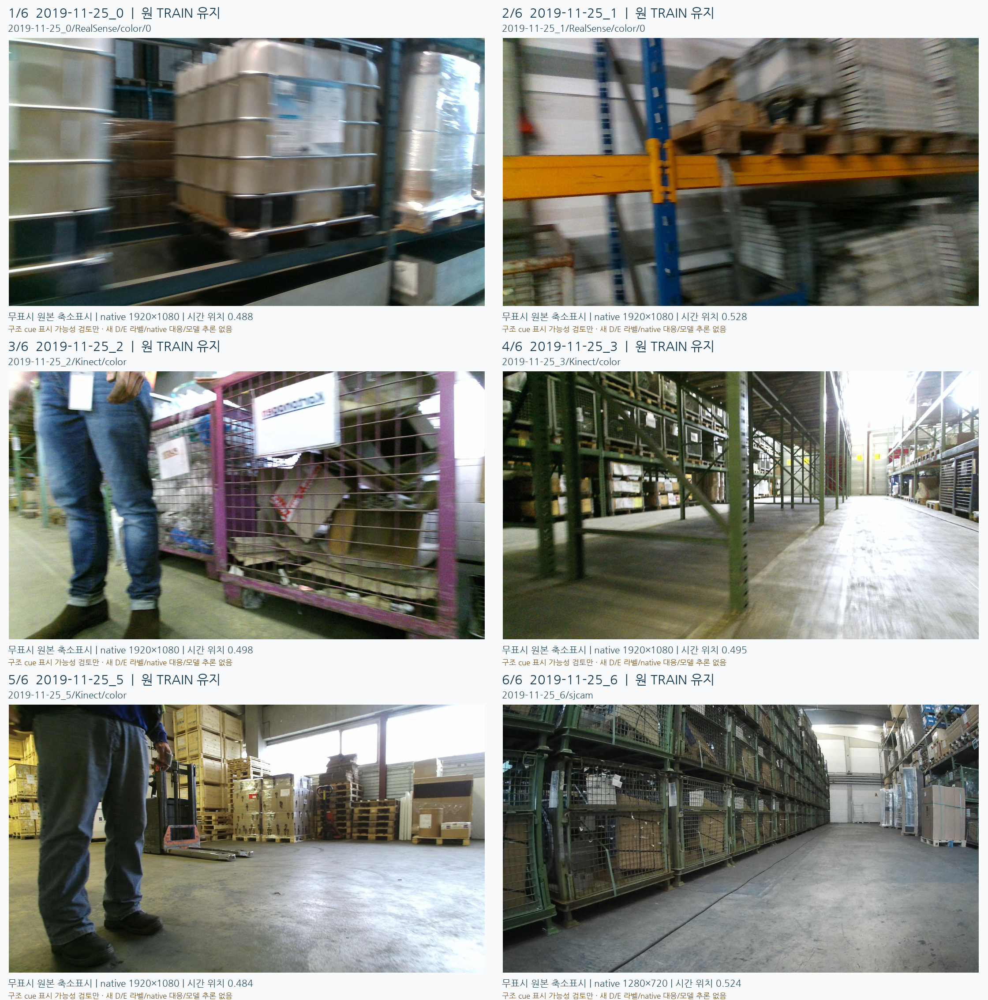

LOCO 공식 TRAIN subset2 — 6take 원본 다양성 확인
모델/점수/현재 평가와 무관하게 시간중간 대표를 픽셀 전에 고정했습니다. 새 D/E 정답·학습 허가·native8 대응은 만들지 않았습니다.
6take×1장의 메타데이터 시간중간 대표를 고정한 뒤 실제 확인했다. 카메라/시점/거리/역광/이동 흐림/화물·랙 가림은 달라지지만, 같은2019-11-25 공식 TRAIN 환경이다. take5는 목재 구조 cue 후보가 가장 잘 드러나고 take1은 흐림을 동반한 후보가 있다. 나머지는 부분/작은 대상 또는 팔레트 대상 불명확을 그대로 남긴다. 명확한 플라스틱 팔레트 형상 다양성이 이6장으로 확인됐다고 주장하지 않는다.

픽셀 전 선택 · 디코드/원본 검증 · 실제 관찰 JSON
1. 2019-11-25_0
PARTIAL_COARSE_REGION_ONLY
적재된 IBC 용기와 금속 케이지·랙이 큰 비중을 차지하고, 하부에 얇은 목재 받침/테두리로 보이는 부분과 틈이 보인다. 화면 전반에 이동 흐림이 있다.
용기 자체 금속 프레임과 랙, 팔레트 받침을 혼동할 수 있고 하부 일부는 적재물·랙과 겹친다.
넓은 받침 영역의 후보 검토는 가능하나, 이 한 장에서 정확한 팔레트 구조 cue 끝점을 확정하기 어렵다. 플라스틱 팔레트 개체라고 인증하지 않는다.
원본 JPEG · 표시 카드
2. 2019-11-25_1
STRUCTURAL_REGION_CANDIDATE_WITH_BLUR
상단 선반의 목재 팔레트 앞쪽 블록과 개구부/긴 판재가 드러난다. 흰 트레이 적재물과 하단 플라스틱 용기들이 있으며 카메라 이동 흐림이 크다.
하중과 선반이 상단/하단을 일부 가리고, 겹친 팔레트·용기 중 어느 구조를 가리키는지 대상 연결이 필요하다.
목재 앞면의 구멍·블록 단위로 넓은 불확실 영역을 검토할 여지는 있으나 날카로운 정확 좌표 gold는 아니다. 하단 용기들을 플라스틱 팔레트로 세지 않는다.
원본 JPEG · 표시 카드
3. 2019-11-25_2
NO_CLEAR_FLAT_PALLET_TARGET
전경의 사람과 보라색 철망 운반용 케이지/적재물이 장면을 지배한다. 바닥의 바퀴와 금속 하부 구조는 보인다.
사람이 왼쪽 전경을 차지하고 철망·종이/금속 적재물이 복잡하게 겹친다.
팔레트로 명확히 연결할 구조 cue를 이 원본에서 바로 표시하기 어렵다. 케이지의 모서리·바퀴를 팔레트 cue로 대체하지 않으며, 보이는 팔레트가 없다는 D/E 음성 라벨도 만들지 않는다.
원본 JPEG · 표시 카드
4. 2019-11-25_3
DISTANT_OR_SMALL_STRUCTURAL_CANDIDATES
낮은 시점의 긴 창고 통로, 선반/기둥과 바닥의 역광이 보인다. 좌측 적층 화물 아래와 우측 먼 쪽에 목재 팔레트의 앞면·받침 같은 구조가 작게 드러난다.
랙 기둥·크로스바가 시야를 나누고 여러 화물·받침이 중첩된다. 먼 부품은 원본에서도 작다.
배경·시점·역광 다양성 확인에는 유용하지만, 가까운 큰 단서보다 구조 소유권과 경계 불확실성이 크다. 현재 단계에서 특정 부품 좌표나 가림 상태를 고정하지 않는다.
원본 JPEG · 표시 카드
5. 2019-11-25_5
CLEAREST_WOOD_PALLET_STRUCTURAL_CANDIDATES
여러 목재 팔레트 더미와 적재된 바닥 팔레트가 보이며, 우측 더미의 긴 앞면 판재·블록·포크 개구부 구조가 비교적 명확하다. 사람과 지게차/핸드팔레트가 전경 및 중경에 있다.
우측 팔레트 더미 앞의 핸드팔레트 손잡이, 적재 상자 및 전경 사람은 부분 가림/대상 경쟁 요소다.
새로운 2D 구조 cue의 불확실 영역을 향후 표시하기 가장 유망한 이번 대표 장면이다. 반복 적층의 서로 다른 팔레트들을 구분해야 하며, native8 대응이나 D/E 라벨을 지금 부여하지 않는다.
원본 JPEG · 표시 카드
6. 2019-11-25_6
SMALL_PARTIAL_PALLET_REGION_CANDIDATES
넓은 통로 왼쪽에 철망 케이지가 길게 적층되고, 우측에는 랩 포장 화물과 목재 받침 팔레트가 보인다. 가장 가까운 우측 화물 밑 팔레트 앞면/블록이 부분적으로 드러난다.
왼쪽 금속 케이지 발은 팔레트 구조와 구별해야 한다. 우측의 실제 팔레트는 화면에서 작고 화물이 상부를 가린다.
전체 시야와 카메라 종류가 앞선 장면과 다르지만, 팔레트 cue는 작고 일부만 보인다. 플라스틱 팔레트 종류/가림 원인을 확정하지 않는다.
원본 JPEG · 표시 카드